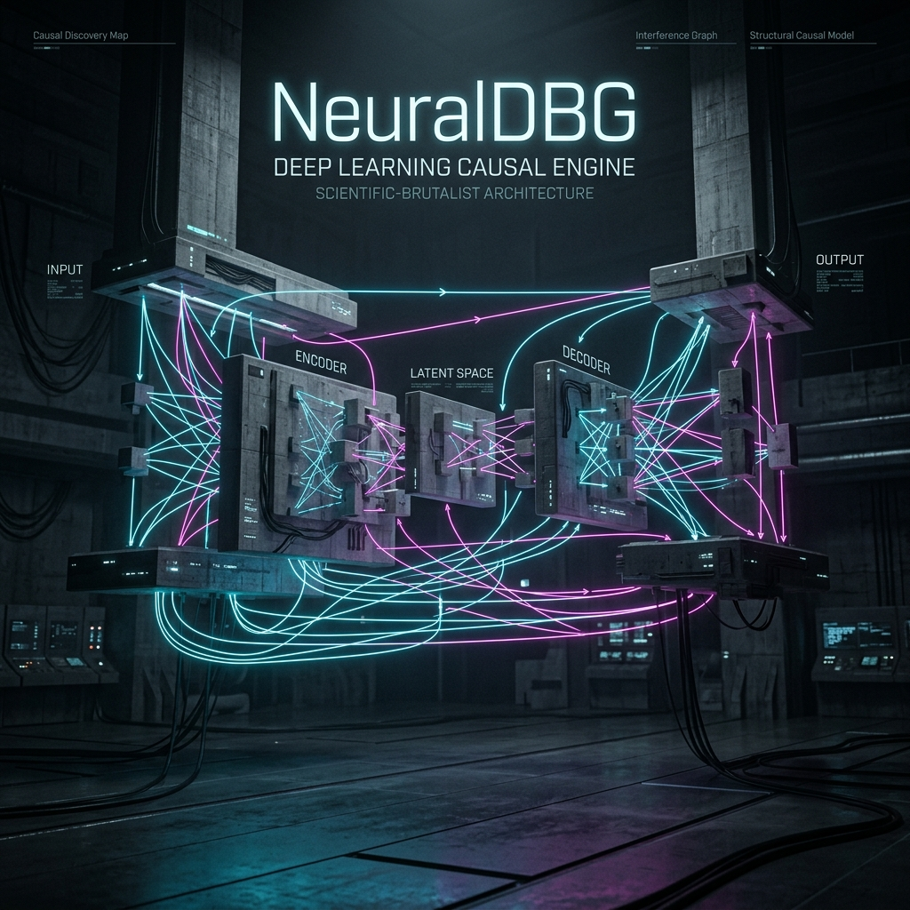

A causal inference engine for deep learning that tells you WHY your model failed, not just WHAT went wrong.
For ML researchers and research engineers who spend hours debugging training failures without knowing the root cause.
Join 127 ML researchers waiting for early access.

Problem_Space
"My training plateaued and I don't know why"
TensorBoard shows metrics but doesn't explain the cause of failure. You're left staring at flat lines.
"I tried every hyperparameter but nothing works"
Without root cause analysis, debugging is guessing. You're wasting compute on random trials.
"Debugging takes more time than research"
Researchers spend 80% of their time on debugging instead of model improvements. It's a bottleneck.
Solution_Architecture
Semantic Event Extraction
Captures meaningful transitions (vanishing gradients, dead neurons) instead of raw tensor data. Reduced noise, higher signal.
Causal Reasoning Engine
Generates ranked hypotheses with confidence scores about why training failed. Stop guessing, start knowing.
Cross-layer Propagation
Identifies how failures cascade through your network layers. Track the root cause as it travels.
Compiler-Aware
Works seamlessly with torch.compile. Performance and observability in one package.
System_Workflow
Wrap your model
with NeuralDbg(model) as dbg:
# Your training loop
...
Run training
NeuralDBG captures events automatically in the background with minimal overhead.
Get explanations
dbg.explain_failure() # Returns ranked hypotheses